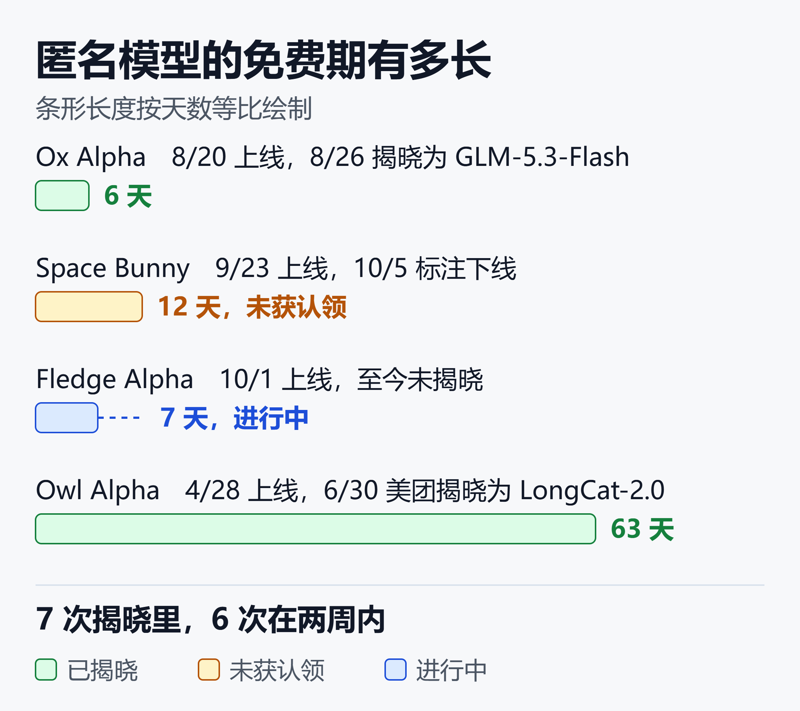

零成本跑编程 Agent：OpenRouter 与 OpenCode 免费模型用法和匿名模型风险
截至 2026 年 10 月初，OpenCode 数据页显示，匿名免费模型 Fledge Alpha 上线几天就累计了约 3141 亿 token、17.6 万次会话，花费为零。
Space Bunny Alpha 在 10 月 1 日占了 OpenRouter 约 22% 的 token 份额，是当周用量最高的单个模型。
免费的东西总有人用。问题是：免费到底免费在哪里，又拿走了什么。
这篇文章把两条最常用的免费路线讲清楚：OpenRouter 和 OpenCode 的免费模型怎么用、限额怎么算、数据去了哪里。最后用 Space Bunny 和 Fledge Alpha 两个匿名模型做案例，说明哪些东西能放心发，哪些不能。
一、先分清三条免费路线
很多人把"免费模型"当成一件事。实际上至少有三条路线，规则完全不同。
| 路线 | 限额与期限 | 数据去向 |
|---|---|---|
| OpenRouter 免费模型 | 按请求数限流 | 以模型页为准 |
| OpenRouter 匿名模型 | 限期免费 | 默认可用于训练 |
| OpenCode 免费档 | 轮换上架 | 免费期可能用于训练 |
这张表的核心结论：三条路线的"免费"都有代价，只是代价不同。有的限请求数，有的限时间，有的拿你的数据换。
二、OpenRouter 免费模型怎么用
OpenRouter 是一个统一网关，一个 API 密钥可以调用很多家的模型。它的接口兼容 OpenAI 格式，原来用 OpenAI SDK 的代码，改一下地址和密钥就能用。
账号与第一次调用
注册账号、在后台创建 API Key，然后把请求发到 OpenRouter 的聊天补全接口。官方文档里，模型 ID 以 :free 结尾的就是免费变体，下面的限额只针对它们。匿名模型的 ID 以 stealth/ 开头。具体 ID 以模型页上显示的为准。
下面是最小调用示例，模型 ID 用占位符代替，请换成模型页里的真实值：
curl https://openrouter.ai/api/v1/chat/completions \
-H "Authorization: Bearer $OPENROUTER_API_KEY" \
-H "Content-Type: application/json" \
-d '{"model": "<模型ID>",
"messages": [{"role": "user",
"content": "用一句话解释 MCP"}]}'
不想写代码的话，在 Claude Code、Cline 这类工具里把接口地址指向 OpenRouter，再填入模型 ID 即可。
限额怎么算
OpenRouter 官方文档对免费变体的限额只按请求次数计：
- 每分钟最多 20 次请求。
- 累计购买额度不足 10 个时，每天最多 50 次。
- 累计购买达到 10 个后，每天上限升到 1000 次。
档位按"历史累计购买的额度"划分，和账户当前余额无关。文档还说，为了抵消取整和充值手续费，实际上累计买到 9 个额度就能拿到 1000 次的上限。
对编程 Agent 来说，每天 50 次很容易用完。一个任务里 Agent 会反复读文件、改代码、跑测试，每一步都是一次请求。实际消耗取决于任务，但配额紧张是大概率的事。
怎么查自己还剩多少
用密钥请求 GET /api/v1/key，返回里的 free_model_daily_requests 会给出当天已用、上限和剩余次数。每天按 UTC 时间重置，每分钟的限制不在这个字段里。
curl https://openrouter.ai/api/v1/key \
-H "Authorization: Bearer $OPENROUTER_API_KEY"
多注册账号、多建密钥没有用。官方明确说容量是全局管理的，只是不同模型的限额不一样，可以换模型来分摊。
遇到 429 和 402 怎么判断
429 表示请求太多，有两个来源：
- OpenRouter 自己的平台限制，比如免费模型的每分钟或每天上限，以及防 DDoS 拦截。
- 上游提供方限流或满载。这时 OpenRouter 会自动换别的提供方重试，你也可以在请求里指定备用模型。
如果是 OpenRouter 自己限流，错误响应会带 X-RateLimit-Limit、X-RateLimit-Remaining 和 X-RateLimit-Reset 三个头，告诉你撞到了哪个限制。
处理办法按官方建议：
- 用指数退避重试，有
Retry-After头就按它等。 - 免费变体想提高上限，就把累计购买额度买到 10 个，或者改用付费变体，它没有平台级的请求数上限。
- 上游限流的话，配置备用模型，或者放宽提供方偏好。
另外要留意 402。账户余额为负时，连免费模型也会返回 402，把余额补到零以上就能恢复。
三、OpenCode 免费模型怎么用
OpenCode 是开源的终端编程 Agent，安装和基础配置在这篇文章里讲过：OpenCode实战指南：免费AI编程Agent + 免费大模型，零成本搞定代码开发。
这里只讲免费模型相关的部分。
连接与选模型
OpenCode 自带一个叫 Zen 的模型网关，里面是团队测试过的、适合编程 Agent 的模型。官方文档的流程是三步：
- 登录 Zen 控制台，复制 API Key。
- 在 OpenCode 里运行
/connect，选 OpenCode Zen，粘贴密钥。 - 运行
/models，查看推荐模型列表，选一个带免费标记的。
配置文件里的模型 ID 格式是 opencode/<模型 ID>。
有社区配置指南称，不填任何密钥也能直接用 Zen 的免费模型。官方文档的标准流程则是先登录。两种说法可能对应不同版本，以你本机 /models 里实际出现的为准。
免费清单一直在轮换
Zen 的免费模型不固定。官方文档里写的是 Big Pickle、MiniMax M2.5 Free 等，每一项都注明"限时免费，团队借此收集反馈"。
10 月 3 日一份社区探测报告列出的免费条目，已经换成了另一批：
- Big Pickle、Ling 3.1 Flash、Fledge Alpha。
- MiMo V2.5 和 V2.6 Flash、Nemotron 3.5 Lightning。
- LongCat 2.5 Preview、Space Bunny 等。
同一份报告观察到一个命名规律：公开厂商保留真名（MiMo 是小米，Ling 是 InclusionAI，Nemotron 是英伟达），匿名厂商用代号。
所以写代码时不要把某个免费模型 ID 写死。下一周它可能就消失了。
免费档只能在 OpenCode 里用
同一份报告测到：绕过客户端直接调用免费模型的 API，会返回 403，提示"免费档只能在 OpenCode 内使用"。
社区里有把 OpenCode 免费模型转成通用 OpenAI 接口的代理项目。这类做法绕开了官方的使用限制，随时可能被封，也可能违反服务条款，不建议用在任何正式项目里。付费的 Zen 模型则可以接入其他 Agent。
四、匿名模型是什么，为什么免费
匿名模型也叫 stealth 模型。厂商不署名，把新模型放到 OpenRouter 或 OpenCode 上限时免费用，换取真实流量和反馈。
Digital Applied 统计了 OpenRouter 自 2025 年 4 月以来的全部匿名上线，截至 8 月下旬共 14 次。结果有几个关键事实：
- 13 个历史记录里，7 个最终被官方揭晓，4 个只有社区推测，2 个至今没有可信说法。
- 所有揭晓都来自官方渠道，要么是 OpenRouter，要么是厂商自己。靠 tokenizer 指纹分析从没真正定案过。
- 揭晓大多发生在上线后两周内，最长一次隔了 63 天。

这张图的结论是：匿名模型的免费窗口以天计，多数一两周就结束。揭晓之后，免费端点通常退役，模型转为正式定价。Ox Alpha 就是例子，8 月 20 日上线，26 日 Z.ai 揭晓它是 GLM-5.3-Flash，同日公布了 MIT 协议的权重。
数据条款才是真正的代价
OpenRouter 的匿名模型适用专门的 Stealth Program 条款。条款授予 OpenRouter 向匿名提供方转授用户内容的许可，目的是让提供方训练、评估和改进模型。
用户内容会带哈希标识，提供方看不到你是谁。但没有按次选择退出的开关，不想被用就别用。
14 次上线里，13 次默认条款都落在"可能用于训练"的范围内。唯一的例外是 Ox Alpha：数据仍会被保留，但承诺不用于训练。这个承诺是政策声明，外界没法验证。
OpenCode 一侧同理。官方文档写明，Zen 的模型默认零留存、不训练，但免费期的 Big Pickle 等模型例外，数据可能用于改进模型。
Nemotron 的免费端点走英伟达的试用条款，提示词和输出会被英伟达记录，文档明确说不要提交个人或机密数据。
五、案例一：Space Bunny Alpha
Space Bunny Alpha 在 9 月 23 日同时出现在 OpenRouter 和 OpenCode，模型 ID 分别是 stealth/space-bunny-alpha 和 space-bunny-free。
规格
- 上下文 100 万 token，最大输出 524,288。
- 输入支持文本、图片、视频，输出为文本。
- 推理强制开启，有 low、medium、high、xhigh、max 五档。
- 支持工具调用和结构化输出，免费期价格为零。
- OpenRouter 页面标注 10 月 5 日下线。
它是谁
厂商没有署名，但证据指向 MiniMax。YFarmX 用 50 个字符串做 tokenizer 对比，与 MiniMax 全系完全吻合，Kimi K2 只有 29 个。
另一个开源工具 stealthprint 在 OpenCode Go 线路上测到 24 项全部吻合，Kimi 13 项，GLM 7 项。
此外，MiniMax Code 里 9 月 18 日出现的测试夹具提到了 M3.1，9 月 27 日 MiniMax 又上线了 M3.1-Flash-Preview，规格与 Space Bunny 吻合。社区因此推测它是 M3.1 的预览版。
要注意的是，tokenizer 指纹只能证明同一家族，不能证明具体版本，更不是官方认领。
截至 10 月 8 日，MiniMax 和 OpenRouter 都没有公开确认这一点。10 月 5 日的下线标注之后，各路线是否仍可用，请以实际页面为准。
它自称是 ChatGPT 或 OpenAI 的模型，这不能作为来源证据。stealth 模板没有给它身份，它只是在即兴回答。
表现
第三方评测给出的数字参差：AI BENCHY 通过率 56.1%，在其榜单上排第 204 位；OpenCode TokenDyno 实测约 75 到 90 token 每秒；有人在约 20 万 token 的输入里藏了三个代码，它全部找了回来。
这些是早期社区数据，不是标准化基准。没有哪个数据说明它是最强的编程模型。
隐私差异
同一个模型，两条路线的数据政策不同。OpenRouter 说提供方可能保留提示词，但不用于训练；OpenCode 的 Space Bunny Free 路线声明零留存、不训练。选路线就是选条款。
六、案例二：Fledge Alpha
Fledge Alpha 在 10 月 1 日上线 OpenCode，模型 ID 是 fledge-alpha-free。
规格
- 上下文 1,048,576 token，最大输出 131,072。
- 输入为文本和图片，输出为文本。
- 推理有 low、high、max 三档，支持工具调用，免费，闭源。
与 Space Bunny 相比，它没有视频输入，输出上限小得多，推理档位也少两档。
它不是一个模型
一份约 130 次探测的 GitHub 报告得出的结论是：Fledge Alpha 背后是多后端路由，而不是单个模型。
依据是同样的提示词，输入 token 数稳定落在三个不同区间，约 4.16 万、4.54 万和 5.42 万。每个区间的行为也不同：有的会自称 Kimi，有的给出官方口径的政治回答，有的直接拒答。
一个单一模型不可能在同样输入下产生三种 token 计数。
报告对身份的判断分了几个置信度：Kimi 在路由池里（高），主锚点是 Kimi K3.1 或类似版本（中高），DeepSeek V4.1 和 Thinking Machines 的 Inkling 是次要后端（中）。
规格上，131,072 的输出上限加 low/high/max 三档，与 Kimi K3 完全一致。
这份结论有两个局限：
- 它主要来自一份个人报告，目前缺少独立的第二来源交叉验证。
- Kimi Code 文档里提到的 K2.8 Preview 规格也相近，报告没有讨论这个候选。
所以"疑似以 Kimi 为主的路由"是目前最合理的说法，不是定论。
对使用者意味着什么
路由意味着你不知道每次请求落在哪个后端。同样的提示词，输出风格和能力可能不一样，数据也可能经过不同的提供方。拿它做需要可复现的评测，结果会不稳定。
七、用免费模型前的风险清单
下面这些做法，建议当作默认规则：
- 不发密钥、令牌、
.env里的内容。 - 不发客户数据、个人信息和未公开的业务代码。
- 匿名模型只用于开源项目或可公开的代码。
- 先用一个脱敏过的小仓库试，再决定要不要扩大范围。
- 需要脱敏时，在网关层处理：给大模型加一道隐私闸门：Presidio + LiteLLM 实战 PII 脱敏指南（2026）
还有一类风险是连续性。免费窗口随时结束，模型 ID 随时消失。如果你的工作流依赖某个免费模型，结束那天就会断。
八、落地建议
不是让你别用，而是怎么用得稳：
- 把模型 ID 放在配置里，不写死在代码里。
- 至少配一个付费或稳定的备用模型。用网关统一管理会省事：LiteLLM 深度调研：用一个开源网关统一 100+ 大模型的完整实战指南
- 评测用你自己的任务，至少 10 个真实任务，看一次通过率和返工次数，不要只看别人的跑分。
- 简单任务用免费模型，关键任务用稳定模型。
- 如果在意成本与效果的关系，可以对照这篇榜单解读：跑分第一最贵，跑分第四最便宜：AI 编程 Agent 的效能剪刀差
小结
OpenRouter 的免费模型限请求数，OpenCode 的免费档限客户端和时间，匿名模型则用数据和不确定性换免费。三者都能用，但用途要分开：公开代码、试验和评测放心用，涉及隐私和交付的工作，不要押在免费窗口上。
两个案例也说明，匿名模型的"身份"几乎都是社区推断。Space Bunny 像 MiniMax，Fledge Alpha 像 Kimi 为主的路由，但没有一个得到官方确认。从历史上看，最终多数会揭晓，只是你不知道是哪天。
免责声明
本文内容基于截至 2026 年 10 月 8 日的公开资料整理，模型身份推断均来自第三方社区，未经官方确认。
免费清单、限额和条款随时变化，请以官方页面和客户端实际显示为准。OpenRouter 的限额数字取自其官方文档，之后可能调整。
本文不构成使用任何服务的建议，涉及数据合规的场景请自行评估。
参考来源
- Digital Applied —— OpenRouter Stealth Models: Who They Turned Out to Be
- GitHub mudrii/opencode-docs —— OpenCode Zen 官方文档镜像
- GitHub Gist —— Two stealth models, ~130 probes: dissecting OpenCode's free tier
- GitHub models.dev —— fledge-alpha-free.toml
- GitHub stealthprint —— case-space-bunny
- Build Fast with AI —— Space Bunny Review
- OpenRouter 官方文档 —— Limits（额度限制与速率限制）
- Codersera —— Ox Alpha Stealth Model Was GLM-5.3-Flash
- Kimi Code 文档 —— Using Kimi in OpenCode
- IBTimes HK —— Chinese AI models outpace US rivals on OpenRouter, Space Bunny tops single-model chart
延伸阅读
- OpenCode实战指南：免费AI编程Agent + 免费大模型，零成本搞定代码开发
- 2026 年最全闭源 AI 编程工具横评：Claude Code vs Cursor vs Copilot vs Codex vs Windsurf - AI知识宇宙 - 用AI采集，用AI生成
- Vibe Coding的隐藏代价：2000个裸奔应用、630万丢失订单、和322%的权限漏洞
推荐搭配装备
善其事，利其器。以下硬件能最大化你的AI体验👇
🔗 通过以上链接购买可支持本站持续运营 🙏